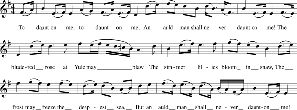

To Daunton Me
Ce qui m'ôte tout courage
The "Glorious Revolution", The Song of the
Chevalier
, Charlie's Landing & Incitement to Revenge: Four songs to the same tune
La Glorieuse révolution, le chant du
Chevalier
, la Venue de Charlie et une Incitation à la revanche: Quatre chants sur la même mélodie

Tune - Mélodie
"To daunton me"
from Hogg's "Jacobite Relics" 2nd Series (1821): N°46 (Third set) , 44 (First set), 45 (Second set) & 47 (Be valiant still)
Sequenced by Christian Souchon
|
To the tune:
There are several non-Jacobite songs to the same tune: The first written appearance of the tune , according to John Glen in "Early Scots Melodies", 1900, was in 1694 as part of the Atkinson Manuscript, although it had the alternative title, 'This wife of mine' . Its first printed mention of the tune was as a broadside , in 1700, under another title, 'Be valient still', a text preceded by the mention [to be sung to the tune of] "The old carle to daunton me (Logan's "Pedlar's Pack", 1869, quoted by Bruce Olson. Source "The Fiddler's Companion" (cf. Links). |
A propos de la mélodie:
Il y a plusieurs chants non-Jacobites sur le même air: La première publication écrite de cette mélodie figure, selon John Glen ("Early Scots Melodies", 1900) dans le Manuscrit Atkinson, datant de 1694, mais sous le titre "Cette femme qui est la mienne" . On en trouve la première mention imprimée, avec un texte intitulé "Ne perds pas courage!", précédé de l'indication [se chante sur l'air de] "The old carle to daunton me" (="Ce vieillard qui veut me décourager", sur une feuille volante ( "broadside" ) de 1700 (remarque de Logan dans son "Pedlar's Pack" -le Ballot du Colporteur, 1869, citée par Bruce Olson). Source "The Fiddler's Companion" (cf. Liens). |
1° The Glorious Revolution
from from J. Ritson's "Scotish Songs", vol. II, p.112 (class III, N°34), 1794, who took it from a collection of "Loyal Songs, &c.", 1750and from Hogg's "Jacobite Relics" 2nd Series N°46
|
"It is not clear how large a part
Burns
had in the following adaptation from the Jacobite
broadside
, which is found as early as 1750 in "A collection of Loyal Songs, Poems", and of which there are many versions. One of these is given by Chambers, "Scottish Songs", II. 355, and the best is in Hogg's "Jacobite Relics", II. N°46 (1821) where no less than four songs to the same tune may be found."
Source: Mudcat Café (cf. links) Hogg was aware that this third set was the most poetical since he wrote: "Is from Mr Moir's collection and not the worst of the three." For instance the alliterative " With cess and press and presbytery " (to cess= to assess taxes) has become a traditional résumé of Jacobite grievance. |
"Il est difficile de dire ce qui est dû à
Burns
dans le texte ci-après qui est une adaptation d'une feuille volante (
"broadside"
) que l'on trouve reproduite dès 1750 dans une collection de "Chants Loyaux" et dont il existe plusieurs versions. On trouve l'une d'entre elles chez Chambers ("Chants d'Écosse", II. 355) et la meilleure de toutes chez Hogg ("Reliques Jacobites", II. N°46, 1821)".
Source: Mudcat Café (cf. links) Hogg savait que cette troisième version était la plus poétique, lui qui notait: "Tirée de la collection de M. Moir. Ce n'est pas la plus mauvaise des trois". C'est ainsi que l'allitération " cess and press and presbytery" (qu'on a essayé de rendre par "les impies, les impôts") est devenue l'expression proverbiale des doléances Jacobites. |

|
TO DAUNTON ME (Third Set)
1. To daunton me, to daunton me, D'ye ken the thing that wad daunton me? Eighty-eight and eighty-nine, And a' the dreary years sinsyne With cess and press and Presbyt'ry ; Gude faith, this had like to daunton me. (Twice) 2. But to wanton me, to wanton me, D'ye ken the thing that wad wanton me? To see gude corn upon the rigs, And a gallows high to hang the Whigs , And right restored where right should be; O, these are the things that wad wanton me. (Twice) 3. But to wanton me, but to wanton me, And ken ye what maist wad wanton me? To see King James at Edinburgh Cross With fifty thousand foot and horse, And the Usurper forced to flee: O, this is what maist wad wanton me. (Twice) |
CE QUI M'ÔTE TOUT COURAGE (3ème version)
1. Sais-tu ce qui m'ôte tout courage, malgré moi Sais-tu ce qui m'ôte tout courage et ronge ma foi? Seize cent quatre vingt huit et seize-cent quatre-vingt neuf Et la suite qui n'apporta rien de neuf, Les impies, les impôts, Nous ployons sous le fardeau. (bis) 2. Mais ce qui pourrait me rendre courage, ma foi, Ce qui me rendrait mon courage, ne le sais-tu pas? C'est de voir mûrir et blondir dans nos champs le meilleur blé, Avec, pour y pendre les Whigs , un gibet. Des lois de bon aloi, Me rendraient confiance en moi. (bis) 3. Mais, avant tout, ce qui peut me rendre courage, Sais-tu ce qui, surtout, me rendrait mon courage? C'est d'assister à l'entrée du Roi Jacques dans Edimbourg Avec fantassins, cavaliers et tambours; Voir fuir l'usurpateur Serait mon plus grand bonheur! (bis) (Trad. Ch.Souchon (c) 2010) |
2° The Song of the Chevalier
from Hogg's "Jacobite Relics" 2nd Series N°44|
This version of the Song of the
Chevalier
, as it is called par excellence, is taken from
Cromek's "Remains"
, with additions from Hogg's Relics. The original was communicated to Mr. Cromek by Mrs. Copland, of Dalbeattle, a lady of distinguished taste and critical acumen in Scottish minstrelsy. There are various versions of it, however, and it is difficult to distinguish some of the interpolations from the original words. The following verse is modern, but extremely characteristic of the chief to whom it refers:—
"Up came the gallant chief Lochiel An' drew his glaive o' nut-brown steel, Says,' Charlie set your faith to me An' shaw me wha will daunton thee.» This verse is omitted in Hogg's. On the other hand, the following verse is included: My mither hecht me meikle might, And bade me haud my royal right; My father hecht me kingdoms three, And bade that nought should daunton me. Now I hae scarce to lay me on ... |
Cette version du "Chant du
Chevalier
", comme on l'appelle le plus souvent est tirée des
"Vestiges" de Cromek
avec des ajouts provenant des "Reliques" de Hogg. L'original avait été communiqué à M. Cromek par Mme Copland de Dalbeattle, une dame qui fait preuve d'un goût raffiné et d'un esprit critique acéré en matière de poésie écossaise. Il en existe toutefois plusieurs versions et il est difficile de distinguer du texte original certains ajouts plus récents. Le dernier couplet est moderne, mais caractérise bien le chef qu'il évoque:-
Puis vint le chef Lochiel Qui leva son glaive au ciel En disant: "Charles, me voilà! Qui vous menace, montrez-le moi! Ce couplet n'apparaît pas chez Hogg. En revanche, on y trouve les vers suivants: Ma mère m'a promis que je serai très puissant Et m'a fait jurer de toujours tenir mon royal rang. Mon père m'a promis que je gouvernerai trois royaumes, Et m'a fait jurer de ne craindre personne. A peine ai-je une pierre ... |
|
TO DAUNTON ME (First Set)
1. To daunton me an' me sae young, An' gude King James's auldest son! O that's the thing that ne'er can be, For the man's unborn that'll daunton me ! O set me ance on Scottish land, An' gie me my braid-sword in my hand, Wi' my blue bonnet aboon my bree, An' shaw me the man that'll daunton me. 2. It's nae the battle's deadlie stoure, Nor friends pruived fause that'll gar me cower; But the reckless hand o' povertie, O! that alane can daunton me. High was I born to kingly gear, But a cuif came in my cap to wear, But wi' my braid-sword I'll let him sec He's nae the man to daunton me. 3. O I hae scarce to lay me on, Of kingly fields were ance my ain ; Wi' the moorcock on the mountain-bree, But hardship ne'er can daunton me. Up came the gallant chief Lochiel , An' drew his glaive o' nut-brown steel, Says, " Charlie, set your fit to me, An' shaw me wha will daunton thee!" |
CE QUI M'ÔTE TOUT COURAGE (1ère version)
1. Je suis jeune et ne me laisse pas décourager. Moi qui suis de notre bon roi Jacques le fils aîné. C'est une chose que l'on ne verra jamais, non jamais Qui peut s'en flatter, celui-là n'est pas né! Qu'on me mène en Écosse! Qu'on me donne une épée ! Un bleu bonnet pour m'abriter, On verra si l'on peut me briser. 2. Ce n'est ni la poussière des combats meurtriers, Ni la traîtrise des faux amis qui peut m'effrayer, Mais la main impitoyable de la noire pauvreté. Seule chose qui me ferait vaciller. J'étais né pour régner. Un cuistre m'a décoiffé. Ma large épée , pour lui montrer S'il est homme à me faire céder. 3. A peine ai-je une pierre où ma tête reposer Sur ces terres qui furent jadis ma propriété; Avec le coq de bruyère je dors sur le flanc des monts Mais l' épreuve de moi n'aura point raison. Puis vint le chef Lochiel Qui leva son glaive au ciel En disant: "Charles, me voilà! Qui vous menace, montrez-le moi! (Trad. Christian Souchon(c)2010) |
3° Charlie's Landing
from Hogg's "Jacobite Relics" 2nd Series N°45|
"This version is from Mr Hardy's Collection and appears to have been written immediately after the landing of Prince Charles in Lochaber. I regret much that I have been unable to procure a copy of an original Jacobite song, which I once or twice heard one Betty Cameron from Lochaber sing, beginning:
Seven men of Moidart , O where will you lie the night?" Source: Hogg in "Jacobite Relics", 2nd Series, 1821 The last four lines of the first stanza of this Second Set appear to be rather similar to the beginning of the Song to the tune "To ease his heart ..." in the "True Loyalist", page 25 (1779): The P[rinc]e did venture once to land, With seven under his command, For to conquer Nations three; That's the man shall govern me. |
"Cette version provient de la Collection de M. Hardy et elle semble avoir été écrite immédiatement après l'arrivée du Prince à Lochaber. Je regrette beaucoup de n'avoir pas pu me procurer un exemplaire du chant Jacobite d'origine que j'ai entendu chanter par une certaine Betty Cameron de Lochaber, et qui commence ainsi:
Vous les sept de Moidart Où coucherez-vous ce soir? " Source: Hogg in "Jacobite Relics", 2nd Series, 1821 Les 4 dernière lignes du 1er couplet de cette "Seconde Version" sont la réplique presque identique du début du Chant sur l'air de "Pour soulager son coeur..." du "Vrai Loyaliste", page 25 (1779): Le Prince accoste à nos rivages. Huit hommes dans son entourage: Assez pour vaincre trois nations. Il doit régner. C'est mon champion. |
|
TO DAUNTON ME (Second Set)
1. Young Charlie is a gallant lad, As e'er wore sword and belted plaid ; And lane and friendless though he be, He is the lad that shall wanton me. At Moidart our young Prince did land, With seven men at his right hand, And a' to conquer nations three: That is the lad to wanton me. 2. O wae be to to the faithless crew That frae our true king took his due, And banish'd him across the sea Nae wonder that should daunton me. But, Charlie lad, ere it be lang, We'll shaw them a' the right frae wrang; Argyle and a' our foes shall see That nane on earth can daunton thee. 3. Then raise the banner , raise it hight; For Charles we'll conquer or we'll die. The clans a' leal and true men be, And shaw me what will daunton thee! Our gude King James shall soon come hame, And traitors a be put to shame; Auld Scotland shall again be free: O that's the thing wad wanton me! |
CE QUI M'ÔTE TOUT COURAGE (2ème version)
1. Bien que jeune, Charlie est courageux et hardi Comme quiconque, ceint du plaid , porte une épée sur lui. Bien qu'il soit venu seul et n'ait point d'amis en ce pays Quiconque le voit, aussitôt s'enhardit. A Moidart il débarque. A sa droite seulement Sept hommes pour trois trônes. Voilà l'homme qui me rend tout confiant. 2. Maudite à jamais soit l'engeance sans foi ni loi Qui se permit de priver de son bien notre vrai roi, Tout en le bannissant par-delà l'océan et la mer. S'étonnera-t-on que je me sente amer? Mais Charlie s'apprête à Démêler le faux du droit. Argyll et tous ses ennemis Vont bientôt voir s'il est démuni. 3. Qu'on lève l' étendard et qu'on le lève bien haut! "Vaincre ou mourir pour le Prince Charles!": tel est le mot. Tous les clans soient loyaux et que tous ils soient dignes de foi! Montre-le moi donc celui qui te vaincra! Il peut, le bon roi Jacques, Bientôt rentrer chez lui La fin des traîtres, Notre Écosse libre: c'est ce qui me ravit! (Trad. Christian Souchon(c)2010) |
4° An Incitement to Revenge
from Hogg's "Jacobite Relics" 2nd Series N°47and "The True Loyalist page 76
|
"Is from Mr Hardy's MSS. altered a little from another manuscript copy.
All these four are to the same air, which seems to have been a great favourite in these days. Tunes have their day as well as dogs, or anything else. We have several times seen in our own day all the populace seized as it were with a mania of fondness for certain tunes ; such as " Cawder Fair," " The Millar of Drone," &c. One may guess from the number of corresponding songs, when such and such tunes had their day. This is particularly the case with the Jacobite songs , as will be seen throughout these volumes." Source: Hogg in "Jacobite Relics", 2nd Series, 1821 |
"Ce chant provient d'un manuscrit de M. Hardy légèrement modifié à partir d'une autre version, également manuscrite.
Ces quatres chants utilisent la même mélodie, visiblement très en vogue à l'époque. Les mélodies, tout comme les chiens du proverbe anglais, connaissent toutes leur jour de gloire. Nous avons nous-mêmes vu plusieurs fois le public s'enticher de façon quasi pathologique de certains airs, tels que "la Foire de Cawder" ou "le Meunier de Drone" etc. On peut déduire du nombre de chansons qui les utilisent, à quel moment telle ou telle mélodie a été le plus en vogue. C'est particulièrement vrai des chants Jacobites comme on a pu le vérifier tout au long de ces deux volumes." Source: Hogg in "Jacobite Relics", 2ème Série, 1821 |
|
BE VALIANT STILL
To the foregoing Air. 1. While thus I view fair Britain's isle, And see my sovereign in exile, A tyrant sitting on his throne, How can I but our fate bemoan ? Be valiant still, be valiant still, Be stout, and be bold, and be valiant still: There's right in the cause, and might in the will, To the bonny bonny lad that is valiant still. 2. I hope we yet shall see the day, When Whigs shall dree the dule they ga'e, Shall yield their proud necks to the laws, And bow beneath the righteous cause. Be valiant, &c. 3. Here's to the lads who dare be free, The lads who true and constant be ; A health to all the loyal few, And curses on the Whiggish crew. Be valiant, &c. 4. May Neptune waft our prince soon o'er, To join our clans on Albion's shore ! May England soon her error see, And aid the cause of heaven and me ! Be valiant, &c. 5. Let Charlie lead us owre the lea, To meet the Whigs as one to three, And soon we'll see, upon the field, What side shall be the first to yield. Be valiant, &c. 6. Then let us join with one consent, ('Tis better late than ne'er repent,) To drive th' usurper o'er the main, And welcome Charlie back again. Be valiant, &c. From "Jacobite Relics", N°47, 1821 |
A SONG
To the tune of To daunton me (1). While thus I view fair Briton's isle, And see my Sov'r[eig]n in exile; An Usurper sitting on his th[ro]ne, Who can but our sad fate bemoan? Be valiant still, be valiant still, Be stout, and be bold, and be valiant still: (2). I hope the day will come to pass When we with joy shall drink our glass, Here's a health to all the loyal few, And curse come on the Wh[ig]gish crew. Be valiant, &c. (3). Ye gods! restore our P[rin]ce again, And ease each subject of his chain; Let Highland chieftains constant be, _ These are the men will wanton me. Be valiant, &c. (4). Here's to the lads who will be free, In the just cause will fight or dee ; And share their fate by land and sea, These are the lads to wanton me. Be valiant, &c. (7). May Neptune waft our P[rin]ce soon o'er, To join our Clans on Albion's shore ! May England soon her error see, And aid the cause of heaven and thee! Be valiant, &c. (6). When at Glad[sm]uir's battle brave, You like a Hero did behave; Your gracious pardon, they receiv'd, Yet William-like they you deceiv'd. Be valiant, &c. (5). Though butcher W[il]lie gain'd the day, By treachery and nae fair play, Let equal numbers take the field, The Highland lads will make them yield. Be valiant, &c. (8). That thus the isle with one applause Make thee Defender of our laws, And banish home th'usurping loun, And on thy head let thy own cr[o]wn. Be valiant, &c. (9). O Cum[ber]land! that hateful name, Who Nero-like obtained fame, For cruelties unheard of, sure; What British soul can this endure! Be valiant, &c. (10). Then let us join with one consent, It's better late than ne'er repent, To drive th' usurper o'er the main, And welcome back our P[rin]ce again. Be valiant, &c. (11). Then we'll enjoy a glorious peace, Not like usurpers with disgrace; And dupes to France we'll never be, As pulpit-drums have said of thee. Be valiant, &c. From "The True Loyalist", page 78, 1779 |
DU COURAGE QUAND MÊME!
Sur l'air précédent 1. Lorsque je vois l'état de la pauvre Britannia, Lorsque je vois à l'exil condamné notre vrai roi, Et, siégeant sur le trône, un tyran, émule de Néron, Comment ne serais-je point dans l'affliction? Du courage quand même! Du courage pourtant! Sois inébranlable, soit fort! En dépit de tout, reste vaillant! La cause est équitable et vaincra si tu le veux: C'est celle que défend le jeune courageux. 2. Je n'ai qu'un seul espoir, c'est que nous voyions un jour Les Whigs subir ce qu'ils nous infligèrent, à leur tour, Contraints de passer sous les fourches caudines de la loi Et de s'incliner devant le juste droit. Du courage... (3) Vous les dieux, il le faut, restaurez Charles bientôt! Et libérez chacun de ses sujets de son fardeau! A santé de ceux qui restent loyaux! Il en est peu! "Malheur aux Whigs" c'est le plus cher de mes vœux Du courage... 3. A la santé de ceux qui se veulent courageux, Des gens loyaux qui veulent qu'on puisse compter sur eux! A la santé de ces braves qui ne sont pas légion Et à la Whiguerie, nos malédictions! Du courage... 4. Puisse bientôt Neptune notre prince pousser, Pour qu'il se joigne à nos clans, vers le rivage écossais! Puisse l'Angleterre, prenant conscience de son erreur, Rallier du cause du Ciel qui me tient à cœur! Du courage... (6) Quand à Gladsmuir, le plus admirable des combats, Put se révéler le héros qui sommeillait en toi, Tu fis preuve envers eux de noble générosité, Mais en retour payée de duplicité! Du courage... 5. Que sur la lice nous soyons conduits par Charlie: Un contre trois face aux Whigs, nous acceptons la partie! On ne tardera pas à savoir sur le champ d'honneur Lequel des deux camps, le premier prendra peur. Du courage... (8). Que cette île te fasse, en te couvrant d'ovations, Le défenseur suprême des lois de notre nation, Renvoyant à Hanovre à jamais l'usurpateur félon, Et dépose la couronne sur ton front! Du courage... (9). Cumberland! Cumberland! Quel abominable nom! Inscrit dans l'histoire à côté de celui de Néron, Ce synonyme de la plus bestiale cruauté! Rien de tel ne nous fut jamais infligé. Du courage... 6. Donc soyons unanimes à rejoindre ses rangs, (Un repentir tardif vaut mieux qu'un repentir absent)! Pour chasser par delà l'océan le vil usurpateur, A Charlie qui revient faisons tous honneur! Du courage... (11). Nous pourrons jouir enfin d'une glorieuse paix Non celle que l'usurpateur voudrait nous imposer Nous ne serons pas les dupes de nos voisins français Comme on ne cesse en chaire de marteler. Du courage... (Trad. Christian Souchon(c)2010) |
A non-Jacobite version by Burns" Scots Musical Museum " Volume II , song N° 182, page 190TO DAUNTON ME 1. The blude-red rose at Yule may blaw, The simmer lilies bloom in snaw, The frost may freeze the deepest sea, But an auld man shall never daunton me. Chorus: To daunton me, to daunton me, An auld man shall never daunton me! 2. To daunton me, and me sae young, Wi his fause heart and flatt'ring tongue That is the thing you ne'er shall see, For an auld man shall never daunton me. 3. For a' his meal and a' his maut, For a' his fresh beef and his saut, For a' his gold and white monie, An auld man shall never daunton me. 4. His gear may buy him kye and yowes, His gear may buy him glens and knowes; But me he shall not buy nor fee, For an auld man shall never daunton me. 5. He hirples twa-fauld as he dow, Wi his teethless gab and his auld beld pow, And the rain rins down frae his red blear'd e'e- That auld man shall never daunton me! |
Version non-Jacobite de Burns" Musée Musical Écossais " Volume II, chant N° 182, page 190
ON NE ME VAINCRA JAMAIS
|